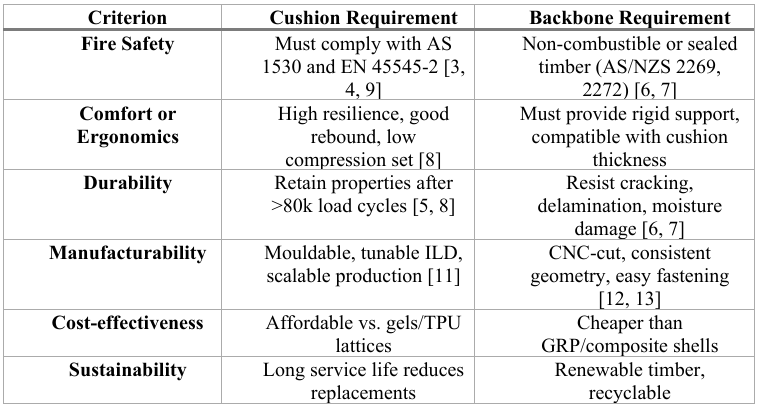
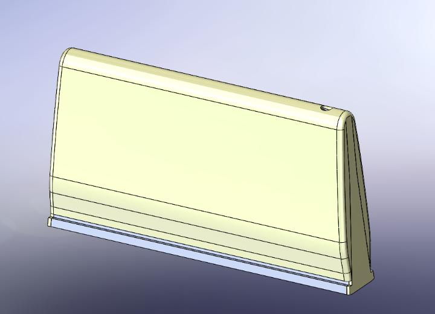
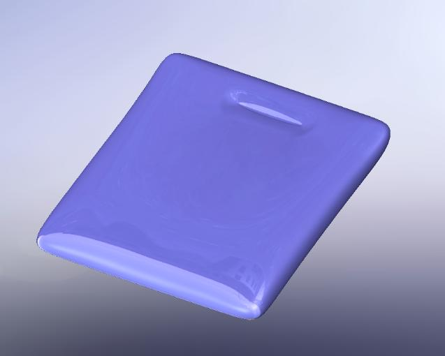

Role
Engineering Intern (Sole Engineer)
Host Organisation
SisterWorks Inc., Springvale VIC
Client
Yarra Trams — Active Fleet Redesign
Confidential Project
Final CAD models, 3D scan geometry, production drawings, and supplier documentation are subject to a confidentiality agreement between SisterWorks, Yarra Trams, and Monash University. This page describes the engineering process and outcomes without disclosing protected design deliverables.
Project Overview
The passenger seats currently in service on the Yarra Trams network show significant wear — cracked and delaminated plywood backboards, permanently compressed foam cushions, and damaged upholstery — all of which compromise comfort, aesthetics, and compliance with updated fire safety standards. SisterWorks was engaged by Yarra Trams to re-engineer these seats: reverse engineer the existing design, identify what is failing and why, select better materials, and deliver a manufacturable replacement.
I was the sole engineer assigned to this project. All engineering activities — inspection, standards review, material research, CAD modelling, 3D scanning coordination, and supplier engagement — were my direct responsibility throughout the placement.
Failure Analysis — What Was Breaking and Why
The project began with hands-on disassembly and inspection of decommissioned seat modules. Observations were categorised into three degradation types:
- Structural degradation: Plywood backboards showed delamination, edge fraying, and moisture swelling at fastener interfaces and exposed corners — evidence of insufficient sealing during original fabrication and long-term exposure to the tram's cyclic temperature and humidity environment.
- Material fatigue: Foam cushions displayed permanent compression-set deformation and localised surface cracking, reflecting polymer matrix fatigue under the repeated cyclic loading of a high-turnover public transport seat.
- Surface wear: Upholstery failure concentrated in high-contact zones, confirming that durability under abrasion was not adequately specified in the original material selection.
 Decommissioned seat inspection — surface wear, foam delamination, and edge/upholstery damage documented across all three components
Decommissioned seat inspection — surface wear, foam delamination, and edge/upholstery damage documented across all three components
Standards Compliance Framework
Replacing a safety-critical component in an active rail fleet is not a materials substitution exercise — it is a compliance exercise. Every candidate material had to be evaluated against a defined set of regulatory benchmarks before it could be considered for prototyping.
- EN 45545-2 R22/R23 — European fire behaviour requirements for railway seating components. Defines hazard levels (HL2/HL3) and test criteria for seat materials.
- AS 1530.2/.3 — Australian flammability, ignitability, and smoke development tests for polymers and composites.
- AS/NZS 2269 — Structural plywood specification; governs veneer species, thickness, bonding, and mechanical properties.
- DSAPT / AS 1428 — Disability and accessibility standards applicable to public transport seating geometry.

Design criteria matrix — requirements mapped across six performance categories for both cushion and structural backboneMaterial Selection
Five foam types and three backbone materials were evaluated. The decision was driven by the intersection of fire compliance, mechanical durability, local availability, and CNC manufacturability.
Cushion — Selected
FR High-Resilience PU Foam
Urecel HR45-FR / HR50-FR. 45–60 kg/m³ density, ILD 140–170 N, >50% rebound recovery after compression. Meets EN 45545-2 R22 and AS 1530. Locally manufactured, 3-week lead time. Cost: ~AUD 40–120 per seat.
Backbone — Selected
12 mm Structural Plywood + Resin Seal
AS/NZS 2269-certified laminated plywood (birch or hoop pine). CNC-machinable to scan geometry, compatible with epoxy/phenolic edge sealing for moisture resistance and improved fire performance. Cost: ~AUD 15–25 per seat.
Evaluated — Not Selected
GRP Composites & Aluminium Honeycomb
High performance but impractical for this scope. GRP requires expensive tooling; honeycomb panels are primarily aerospace-grade with limited local supply and specialised fabrication requirements.
Evaluated — Not Selected
Memory Foam / Gel Silicone
Memory foam fails on durability — slow recovery and reduced resilience with extended use. Silicone gels offer superior fire resistance but at material costs that make fleet-scale refurbishment commercially unviable.
Weighted Scoring Matrix — Material Shortlist
Three candidate materials for the structural backbone were scored against 8 engineering criteria. Each criterion was weighted to reflect its relative importance in a safety-critical, high-turnover public transport application. Scores are out of 5; weighted totals determine the recommendation.
(AS/NZS 2269) GRP Composites
GRP composites scored strongly on mechanical performance and fire resistance but failed on local availability, tooling cost, and fabrication complexity — making them commercially unviable for a fleet-scale refurbishment project. FR HR PU Foam and Structural Plywood were both recommended: complementary materials for their respective roles (cushion vs. backbone).
CAD Modelling & 3D Scanning
Accurate digital geometry was critical for enabling CNC manufacture of the new plywood backbone. The process ran in two stages: manual measurement to establish overall dimensions and mounting geometry, followed by structured-light 3D scanning to capture the seat's complex organic curvature with engineering-level precision.
The initial SolidWorks model — built from calipers, steel rules, and hand-drawn engineering sketches — captured the seat's overall form and fastener geometry but lacked fidelity in the ergonomic surface transitions. A trained technician subsequently performed a structured-light scan, generating a high-resolution point cloud that was processed into a triangulated STL mesh, then converted to a STEP-format parametric CAD surface model. The final scan-derived model achieves a dimensional tolerance of ±0.5–1.0 mm and serves as the master reference for all downstream CNC toolpath generation.
Final Design Not Shown
The 3D scan model, STEP geometry files, and production drawings are confidential deliverables owned by SisterWorks and Yarra Trams under the project's IP agreement. The images below show the preliminary manual CAD model developed prior to 3D scanning — an intermediate stage shared in the academic report.


Supplier Engagement
Supplier engagement validated that the proposed material system was not just technically sound, but practically procurable from local supply chains within realistic timelines and cost constraints. RFQ documents specifying density range, fire-retardant requirements, and compliance standards were issued to multiple suppliers across foam, plywood, and resin categories.
- Foam: Urecel Australia responded with a comprehensive quotation confirming availability of HR45-FR and HR50-FR formulations, EN 45545-2 R22 compliance, and a 3-week lead time. Joyce Foam Products and ACMA Industries were also contacted.
- Structural plywood: Plyco, Carter Holt Harvey, and Bunnings Trade Commercial Division were engaged for AS/NZS 2269-certified sheet stock and CNC profiling capability.
- Resin coatings: Epoxy and phenolic systems sourced from multiple manufacturers for edge sealing and moisture/fire performance enhancement.
From Failure Observations to Vendor-Ready Brief
The value of this project was not in finding that the seats were failing — anyone could see that. The value was in building a chain of evidence tight enough that a procurement decision could be made without further engineering interpretation. That required three explicit translation steps:
Failure Mode → Root Cause
Each physical observation (delamination, compression-set, surface wear) was traced to a specific root mechanism: insufficient edge sealing, incorrect density specification for the load profile, and inadequate abrasion specification respectively. Without this link, a replacement material selection risks repeating the same failure.
Root Cause → Specification
Root causes were converted to material performance requirements: minimum foam ILD (140–170 N), rebound recovery (>50%), plywood bonding class (AS/NZS 2269 Type A), edge sealing requirement (epoxy/phenolic), and fire classification (EN 45545-2 R22 Hazard Level 2/3). These are the numbers a supplier can quote against.
Specification → RFQ
Specifications were packaged into structured RFQ documents that named the compliance standard, specified the dimensional range, stated the required test evidence, and asked for lead time and per-unit cost. Suppliers could respond directly — no further engineering interpretation needed on their side.
RFQ → Procurement Decision
Responses from Urecel Australia (foam), Plyco and Carter Holt Harvey (plywood), and resin suppliers confirmed local availability, compliance, and realistic lead times — closing the loop from a seat failure observed in service to a vendor-validated material system ready for prototype fabrication.
Outcomes
Root Causes Identified
Plywood delamination traced to insufficient original edge sealing. Foam compression-set attributed to incorrect density specification for the load cycling profile of public transport seating.
Compliant Material System Specified
FR HR PU foam (Urecel, EN 45545-2 R22) + resin-sealed structural plywood (AS/NZS 2269). Quotation received, compliance confirmed, manufacturing pathway established.
Digital Master Geometry Captured
3D structured-light scan produced a STEP-format CAD model at ±0.5–1.0 mm tolerance — the definitive reference for CNC toolpath generation and future prototype fabrication.
Standards Compliance Roadmap
Delivered a full standards matrix and testing plan covering EN 45545-2, AS 1530.2/.3, AS/NZS 2269, and DSAPT, providing the compliance dossier framework for Yarra Trams approval.